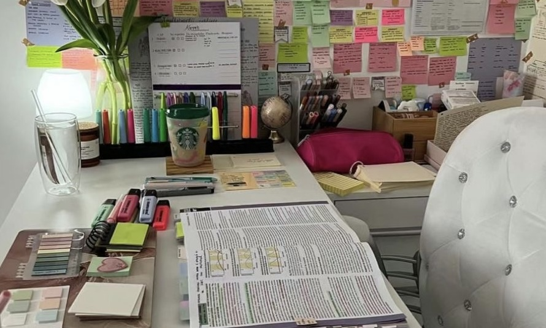

Study Tips

Stay Organized
Organization helps reduce stress and keeps you on track. Use planners, calendars, or apps to manage assignments and deadlines effectively.
Use Active Learning
Engage with your material by summarizing, using flashcards, or teaching others. Active learning improves understanding and memory.
Avoid Distractions
Limit phone use and study in a quiet environment. Even small distractions can reduce your focus significantly.
Take Breaks
Short breaks help refresh your brain. Try studying for 25 minutes and resting for 5 minutes to stay productive.
Review Regularly
Instead of cramming, review your notes frequently. This improves long-term understanding and reduces exam stress.